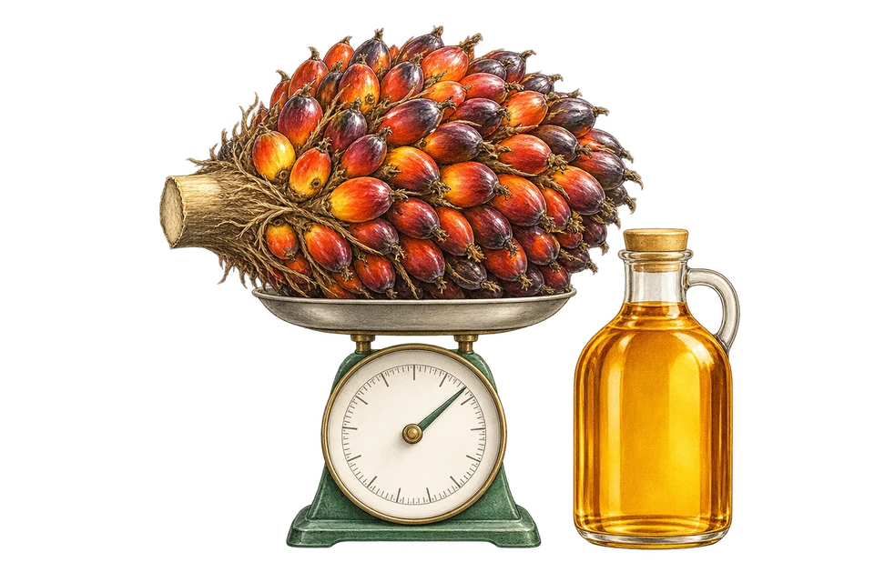
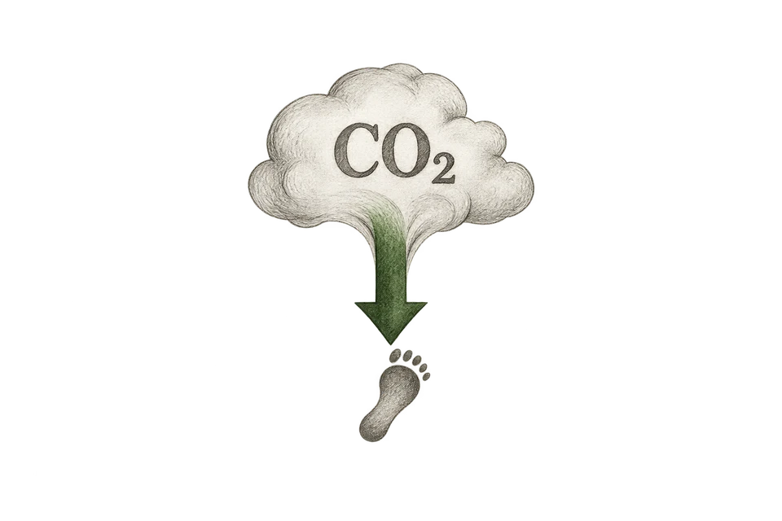
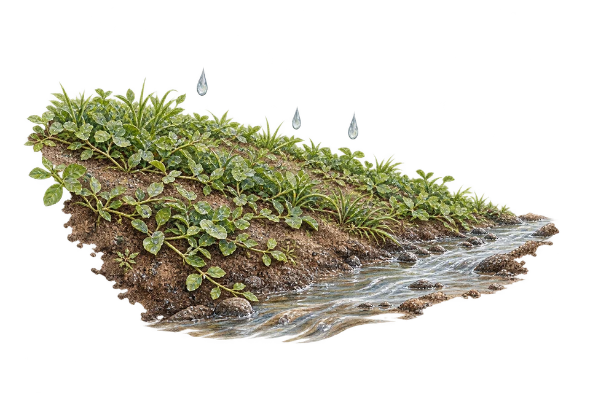

Palm Bunch Ash Potassium Fertilizer from Indonesia
Natural potassium made from empty oil palm fruit bunch ash, a partial replacement for KCl that also neutralizes acidic plantation soils. Sucofindo-tested at 37.36% K₂O (dry basis), available as powder and granule.
- Powder60–325 mesh
- Granule2–5 mm

Natural Potassium (Palm Bunch Ash) supplier in East Java, Indonesia
Palm bunch ash is a natural potassium (K) source made from the ash of empty oil palm fruit bunches. It is used as a partial replacement for KCl (muriate of potash) and, being alkaline, it also helps neutralize acidic plantation soils while it fertilizes.
Potassium improves fruit filling, bunch weight and oil yield, and helps plants cope with drought and disease. Besides potassium, the ash contains calcium, magnesium and silica. Because it is recycled from palm mill residue, it supports a circular economy for plantations and industry.
palm bunch ash · EFB ash · natural potash fertilizer · organic potassium · KCl alternative
COA (Certificate of Analysis)
Natural Potassium (Palm Bunch Ash) Granule · Report No. E13102/FOBOAT · Sep 18, 2026
- K₂O (dry basis)
- 37.36%
- Moisture
- 4.37%


Results apply to the palm bunch ash granule sample tested by the Sucofindo laboratory (ID Survey group). Every batch/shipment is accompanied by its own COA.
Specifications
| Forms & sizes | |
|---|---|
| Powder | 60–325 mesh |
| Granule | 2–5 mm |
| Custom sizes | Outside 60–325 mesh on request |
| Typical analysis (Sucofindo report E13102/FOBOAT) | |
| K₂O (dry basis) | 37.36% |
| Moisture | 4.37% |
| Trade details | |
| Packaging | 25 kg bag · 50 kg bag · Jumbo bag |
| Origin | East Java, Indonesia |
| HS code (indicative) | 2621.90Other ash and residues (may be classified as fertilizer depending on the destination) |
| Incoterms | Open to discussion |
| MOQ & capacity | Ask via WhatsApp or email |
HS codes are indicative 6-digit codes; final classification is confirmed for each shipment with the destination's customs requirements.
Why buyers choose our Natural Potassium
High Potassium, Heavier Fruit
Potassium (K) improves fruit filling, bunch weight, and oil yield.
Drought & Disease Resilience
K regulates stomata and strengthens plant cell walls.
Alkaline, Raises pH
Helps neutralize acidic soil while fertilizing at the same time.
Rich in Secondary & Micronutrients
Contains Ca, Mg, and silica that further enrich the soil.
Eco-Friendly & Circular
Recycled from palm empty fruit bunches — a natural alternative to KCl.
Green Concrete Potential
Reactive silica with pozzolanic properties for partial cement replacement.
How Natural Potassium works in each sector
What the product does, and the result buyers get, sector by sector.
-

Agriculture & PlantationsAdds high potassium (K) from a natural source
Heavier fruit, higher palm oil yield, drought-resilient plants
-

Construction & InfrastructureReactive pozzolanic silica partially replaces cement
Lower carbon footprint — green concrete from palm waste
-

Mining & ReclamationAdds potassium and raises the pH of overburden soil
Cover crops establish quickly, reducing erosion
Natural Potassium: buyer questions
Can't find your answer? Our team replies within 1×24 business hours.
How much K₂O does your palm bunch ash contain?
Can palm bunch ash replace KCl?
Which forms are available?
How is it packed and shipped?
What is the minimum order quantity?
Other natural minerals we supply


Need Natural Potassium for your next shipment?
Tell us the grade, packaging, quantity and destination. We reply within 1×24 business hours.